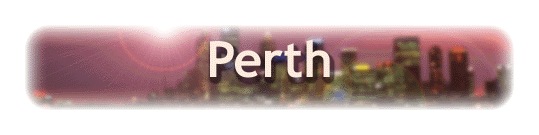
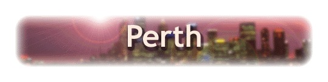
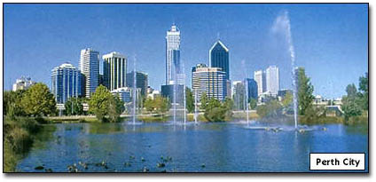
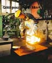
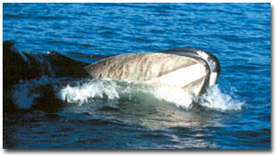
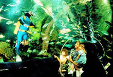

Perth is a sprawling metropolis lying on the banks of the Swan River and stretching along over 150km of the Indian Ocean.Perth is situated in the south-west corner of Western Australia and is the second most isolated city on the planet after Honolulu, Hawaii. In fact, Perth is closer to Singapore than Sydney!
The isolation makes Perth seem like it is in a different country to the rest of Australia, providing a totally unique experience to anywhere else in the world - something Western Australians embrace with pride.
Perth is a modern and sophistocated city with heaps of nightlife and wonderful beaches. Most noticable is the relaxed and friendly atmosphere which greets visitors.
Things to do and see
1. Perth Mint
You can watch coins and medallions being minted and see a real gold pour.
The mint was established in 1899. It is now Australia's specialist gold, silver and platinum coin maker. A museum contains a variety of historical displays allied to coins, the gold industry, prospecting and precious metal. The displad precious metal. The displays change monthly.
Opening hours available from
WhatsOn.



Tourist Services
1. Japanese Western Australian Tours.
Terryaki Australia Tour.
2. General Tourism Information.
W.A. Tourism Web Site.
3. Caravanning and Camping in W.A.
Caravan Industry Australia - W.A..
4. Tourist Lounge & Email Services.
Perth Tourist Lounge.
5. Search for Tourist Services in Perth.
CitySearch Perth: Services.
6. Airline Operators in Perth & W.A.
Airlines, Airport Services.
| Monthly avg. Temp (C) | Monthly avg. Clear Days | Monthly avg. Rainfall (mm) |
|---|---|---|
| 24.3 | 11.4 | 66.2 |